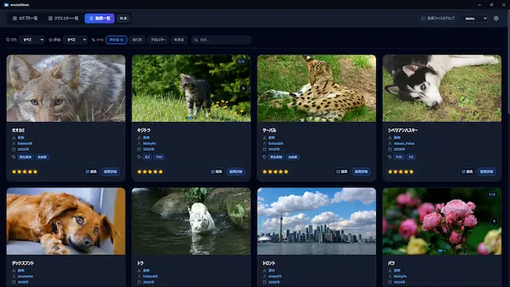
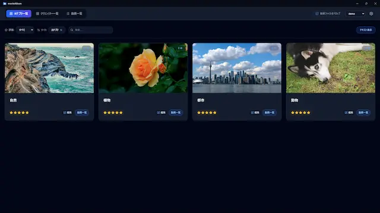
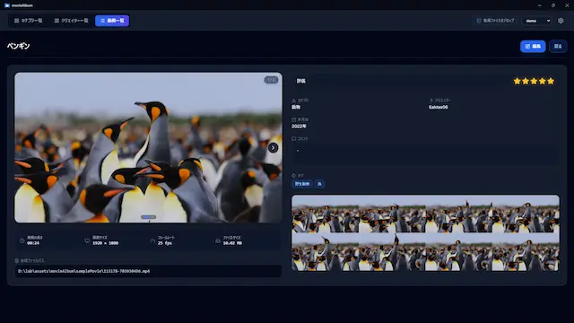
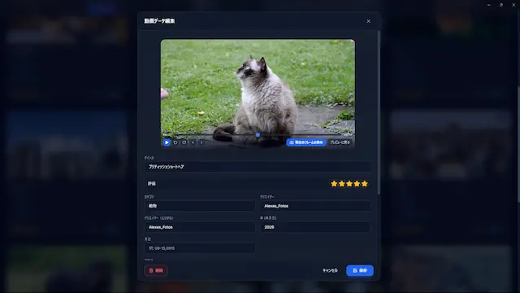

MovieAlbumについて
MovieAlbumは動画コレクションを効率的に整理・閲覧できるWindows用アプリです。
一般的な動画管理アプリは、動画自体に評価やタグ付けを行うものがほとんどです。
これでは、たとえば映画のコレクションを主演俳優別に整理したいとき、俳優の情報と映画の情報を分けることができません。
そこでMovieAlbumでは、それぞれの動画に加え、ユーザーが選択した項目でもリストを生成し、整理できるようにしました。
活用例
- 映画コレクション：ジャンル、主演俳優、監督別に整理
- 旅行の思い出：行先、年、参加メンバー別に整理
- グルメ動画：ジャンル、エリア、価格帯別に整理


カテゴリ、名前、年、タグ、評価などによる絞り込みと、タイトル、カテゴリ、名前、年月日によるソートが可能。サムネイルクリックで動画プレイヤーが起動します。

ユーザーが指定した項目にタグ、評価をつけられます。タグ、評価による絞り込みと、項目によるソートができます。サムネイルクリックで動画一覧に遷移します。

グループ動画はスライダー形式で表示。サムネイルクリックで動画プレイヤーが起動します。

お気に入りの瞬間をサムネイルに設定できます。
主な機能
- カテゴリ、名前、評価、タグなどで動画を分類できます。
- メインの動画一覧に加え、ユーザーが選択した項目によるカスタムリストを作成できます。
- お気に入りのシーンをサムネイル画像として設定できます。
- 複数の動画をグループ化することも可能です。
- 動画データ本体の変更は一切行いません。
対応ファイル形式
- mp4
- m4v
- webm
- ogv
- ogg
- avi*
- wmv*
- など
* 一部制限あり
MovieAlbumであなたの動画鑑賞をより快適に。
アップデート履歴
- version 1.4.0
-
- 動画詳細画面にタイムライン・サムネイルを追加。
- version 1.3.1
-
- UI改善、不具合修正。
- version 1.3
-
- カスタム一覧を最大3つ作成可能に。
- グループ化解除の不具合を修正。
- version 1.2.3
-
- 同じ名前のふりがなの自動入力化。
- タグ関連UIを改善。
- version 1.2.2
-
- 動画詳細画面のレイアウトを調整。
- tabキー操作の不具合を修正。
- オープンソースライセンス表記を追加。
- version 1.2.1
-
- 軽微なテキスト修正。
- version 1.2.0
-
- グループ動画の表示をスライダー形式に変更。
- 中国語（簡体）、中国語（繁体）対応を追加。
- version 1.1.0
-
- 検索機能追加。
- wmv動画などのサムネイル画像作成機能を改善
- ウィンドウ拡大時のレイアウトを調整。
- version 1.0.1
-
- 設定ファイルの切り替えに対応。
- パフォーマンス改善。
- version 1.0.0
-
- 初回リリース。
プライバシーポリシー
- このアプリは、個人情報、またはデバイス情報などの個人を特定できる情報を収集、保存、送信しません。
- 外部サーバーや第三者との情報の共有は一切行いません。
ライセンス・謝辞
MovieAlbumのソースコードはMIT Licenseに基づき公開されています。
また、動画のサムネイル生成・メタデータ解析のためにFFmpeg（GNU GPL v3.0、gyan.dev
ビルド）を同梱・利用しています。同梱バイナリに対応するソースコード提供に関するお問い合わせは、GitHubリポジトリまたは開発者までご連絡ください。